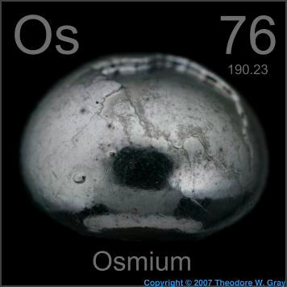

HOME
PREVIOUS
NEXT

Osmium
Atomic Weight: 190.23
Density: 22.59 g/cm3
Melting Point: 3033 °C
Boiling Point: 5012 °C
Ultra dense osmium is alloyed with other precious metals to make them harder and stronger. It sometimes occurs naturally combined with iridium, and such osmiridium mixtures are used in fountain pen tips.